![Learn in 60 Seconds. Three simple steps happen on every turn: 1. Draw 2 Cards or Play a Card, 2. Play an Ocean, 3. Play Species and Build Combos. Draw or Play, Score Points, Win the Game. Quick Rules: What is an Ocean? Oceans are the foundation of your reef. What are Star Abilities? Some cards have Star Abilities that trigger when you play the card and help you build bigger turns and stronger combos. How does scoring work? Scoring comes from playing cards and combining cards, using Star Abilities, and following strong strategies. What ends the game? The game ends when someone draws the End Game card, which is shuffled somewhere in the bottom 15 cards of the deck. After the End Game card is drawn, every player gets one more turn. Tip: Plan ahead, stay flexible, and combine your cards to score big.](assets/learn-in-60-seconds.png)
From waves to wings.
Create vibrant ocean ecosystems, discover powerful card combinations, and outmaneuver your opponents before the END GAME card surfaces. Easy to learn, deep to master, and designed to help support ocean conservation with every game.
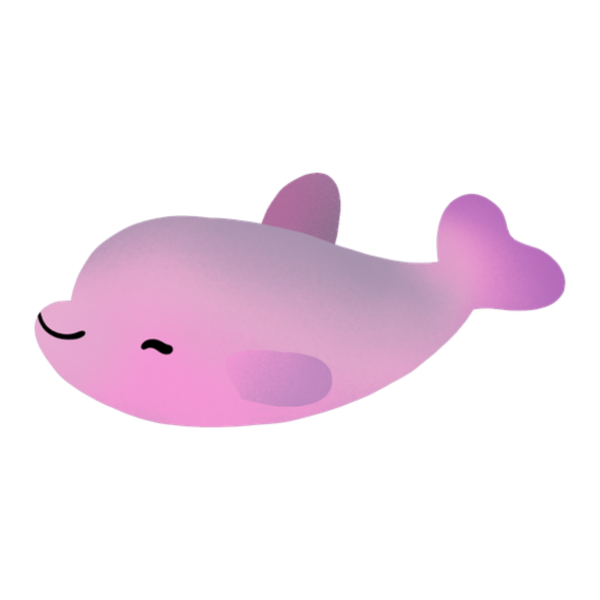
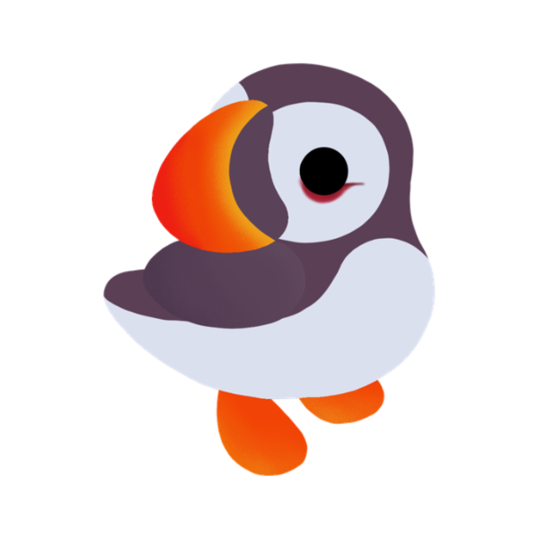
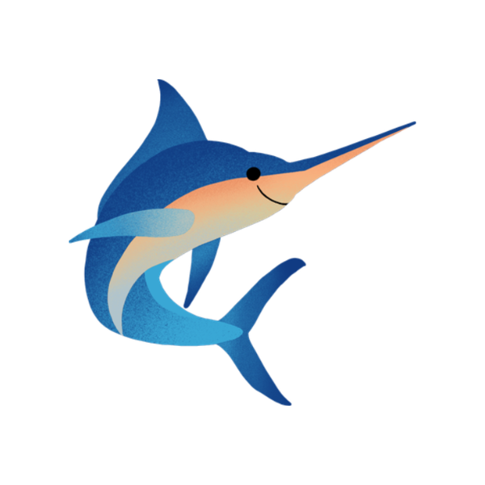
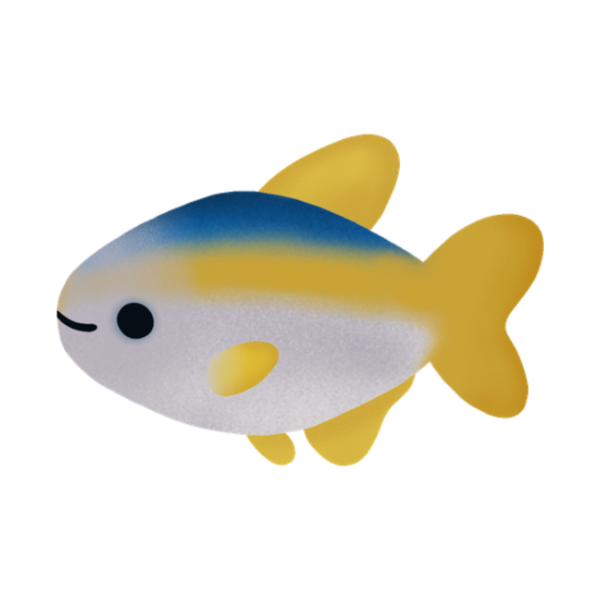
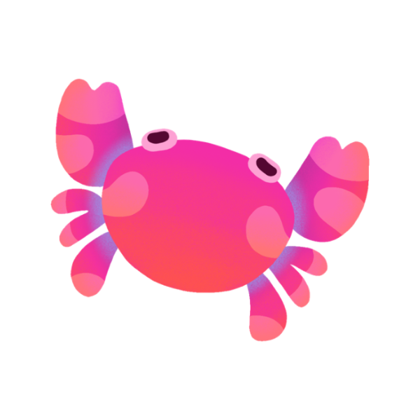
Solo, head-to-head, or a crowded table. Plays in 20-60 minutes.
Nine species, eight oceans, fifty-plus Star Abilities to chain.
Draw cards, play critters, and build your ecosystem. The basics are simple, but the best strategies reveal themselves with every game.
Every game sold sends 2% of revenue to ocean conservation. Receipts published.
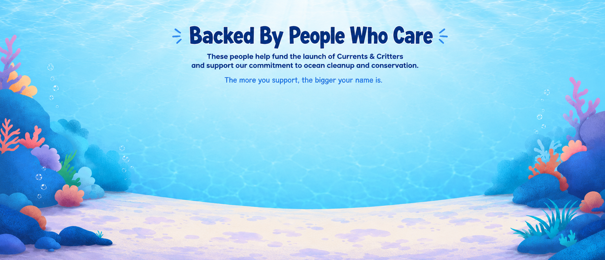
Don't want to do math at the end of the game? Take a photo of your final board. Our scorer reads every card, runs every synergy, and tells you who won - to the point.
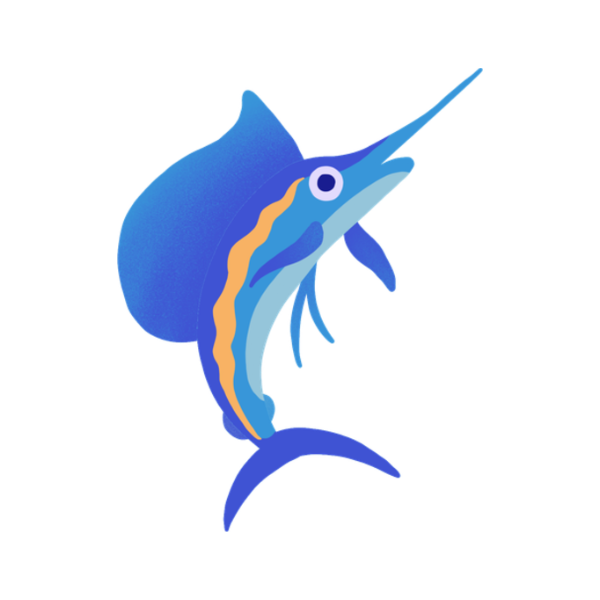
Nine species. 150+ individual cards. Each illustrated by hand. Tap a tab to swap the grid.
Master eight distinct ocean environments, each designed to reward smart card play, species synergy, and creative strategy. No two ecosystems have to grow the same way.
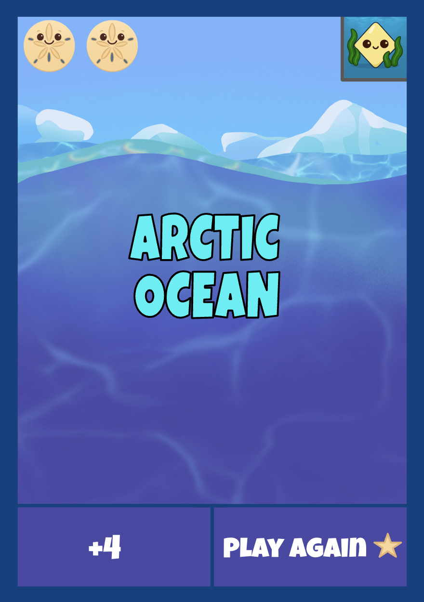
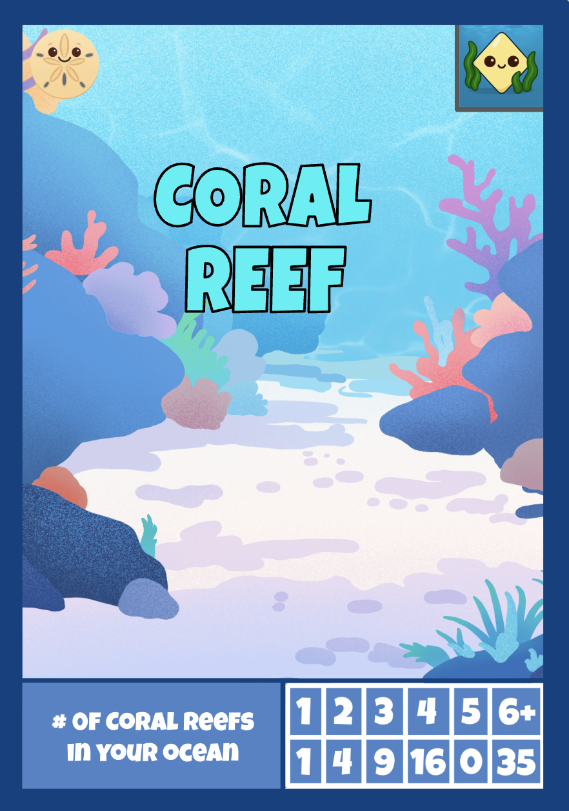
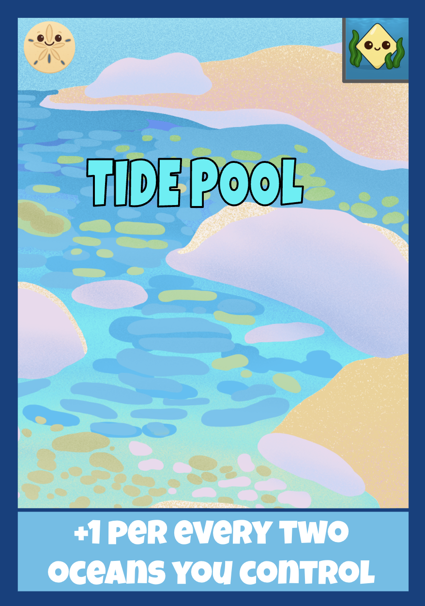
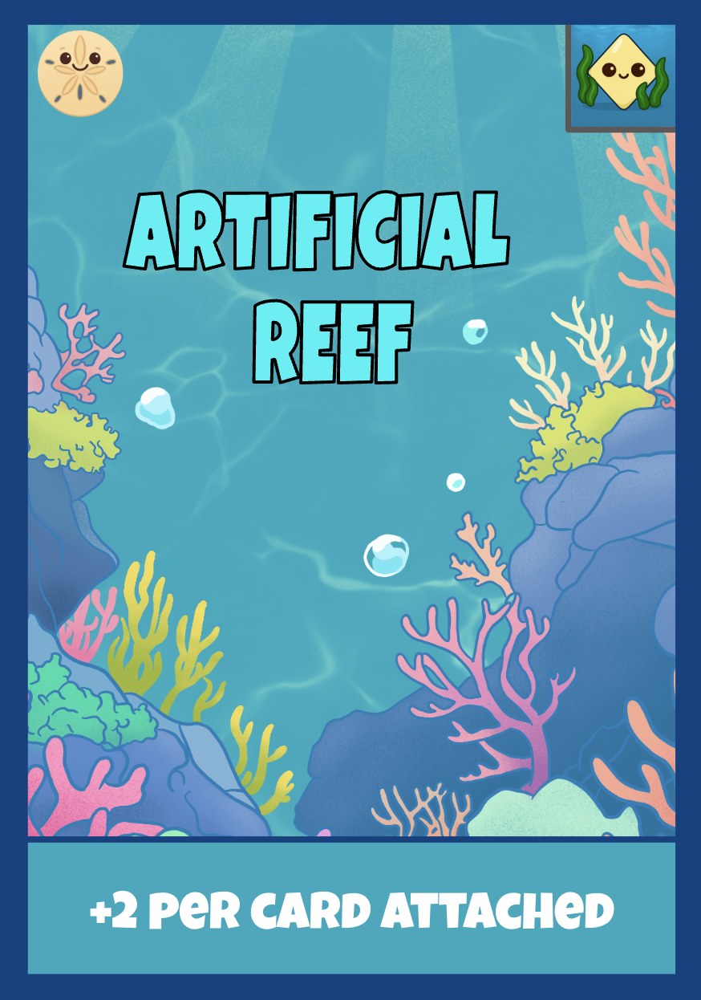
Four ocean environments are featured here, with four more waiting in the box: Kelp Forest · Mangrove · Pier · Deep Ocean
2% of every game sold supports ocean conservation. Want to make an even bigger impact? Partner with Currents & Critters to help protect the waters that inspired the game.
Three ways to back the launch. Pick the one that fits - each comes with permanent supporter recognition and a profile frame in the online game.
Join the first wave of supporters and help bring Currents & Critters to life.
Make a bigger splash - get a physical copy and exclusive in-game rewards.
Become a top supporter and leave a lasting mark on the game itself.
Bonus XP, profile frames, and player icons are cosmetic/progression rewards only and do not affect gameplay. Supporter Reef Wall placement is based on contribution amount, with the highest supporters featured first. A portion of every contribution goes toward ocean cleanup and conservation.
Growing up near the Jersey Shore, my family and I spent countless days in and around the ocean. As I got older and moved away, I realized how much those memories shaped my love for the ocean and the life in and around it.
That passion is a big part of why I created Currents & Critters. I wanted to build something fun that also gives back - helping support ocean cleanup and conservation so future generations can experience clean, healthy, and abundant oceans the same way I did growing up.